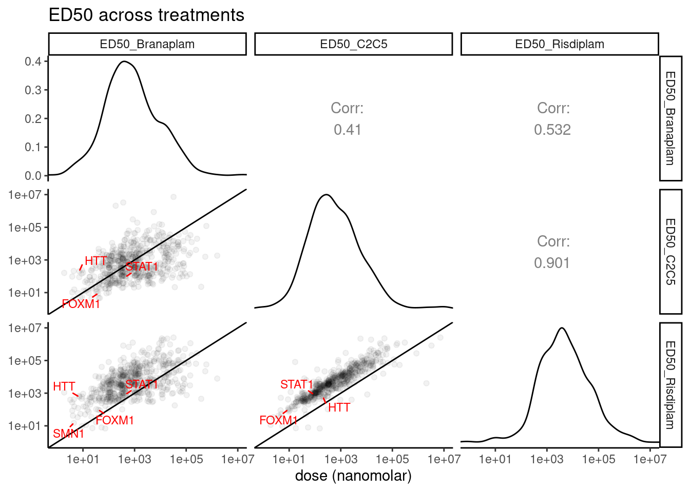
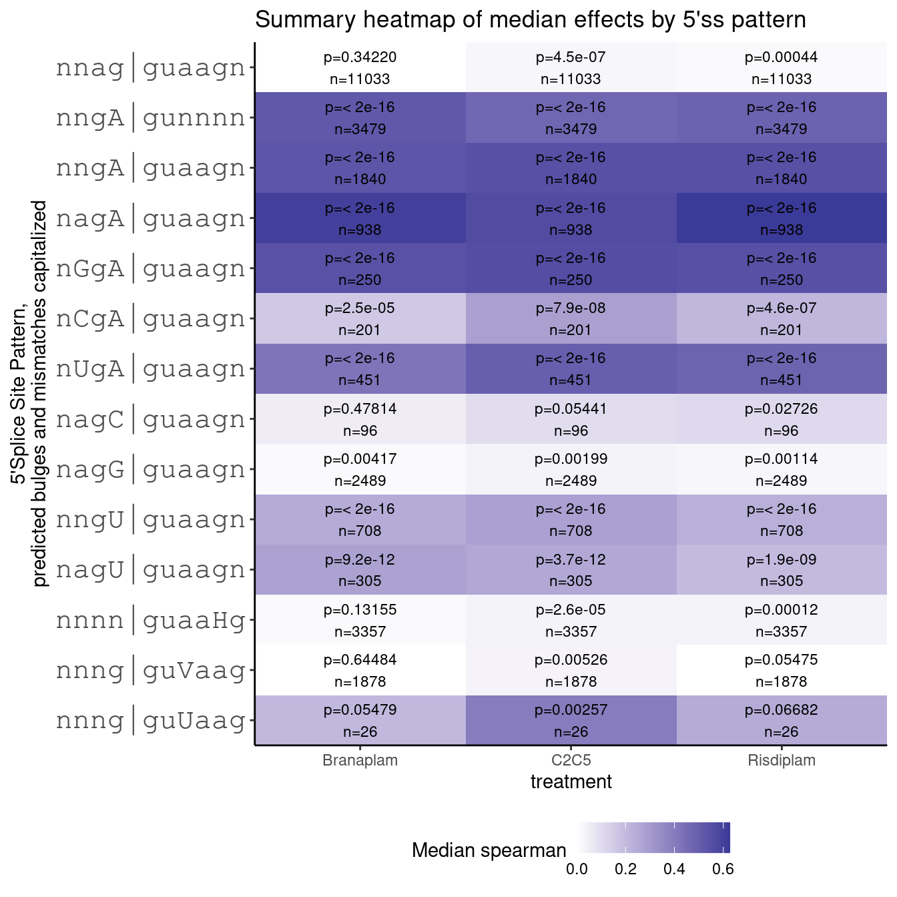

Last updated: 2022-09-26
Checks: 5 2
Knit directory: 20211209_JingxinRNAseq/analysis/
This reproducible R Markdown analysis was created with workflowr (version 1.6.2). The Checks tab describes the reproducibility checks that were applied when the results were created. The Past versions tab lists the development history.
The R Markdown is untracked by Git. To know which version of the R Markdown file created these results, you’ll want to first commit it to the Git repo. If you’re still working on the analysis, you can ignore this warning. When you’re finished, you can run wflow_publish to commit the R Markdown file and build the HTML.
Great job! The global environment was empty. Objects defined in the global environment can affect the analysis in your R Markdown file in unknown ways. For reproduciblity it’s best to always run the code in an empty environment.
The command set.seed(19900924) was run prior to running the code in the R Markdown file. Setting a seed ensures that any results that rely on randomness, e.g. subsampling or permutations, are reproducible.
Great job! Recording the operating system, R version, and package versions is critical for reproducibility.
Nice! There were no cached chunks for this analysis, so you can be confident that you successfully produced the results during this run.
Using absolute paths to the files within your workflowr project makes it difficult for you and others to run your code on a different machine. Change the absolute path(s) below to the suggested relative path(s) to make your code more reproducible.
| absolute | relative |
|---|---|
| /project2/yangili1/bjf79/20211209_JingxinRNAseq/code/bigwigs/unstranded/(.+?).bw | ../code/bigwigs/unstranded/(.+?).bw |
Great! You are using Git for version control. Tracking code development and connecting the code version to the results is critical for reproducibility.
The results in this page were generated with repository version 25df2a6. See the Past versions tab to see a history of the changes made to the R Markdown and HTML files.
Note that you need to be careful to ensure that all relevant files for the analysis have been committed to Git prior to generating the results (you can use wflow_publish or wflow_git_commit). workflowr only checks the R Markdown file, but you know if there are other scripts or data files that it depends on. Below is the status of the Git repository when the results were generated:
Ignored files:
Ignored: .DS_Store
Ignored: .Rhistory
Ignored: .Rproj.user/
Ignored: ._.DS_Store
Ignored: analysis/.RData
Ignored: analysis/.Rhistory
Ignored: analysis/20220707_TitrationSeries_DE_testing.nb.html
Ignored: code/%
Ignored: code/.DS_Store
Ignored: code/._.DS_Store
Ignored: code/._DOCK7.pdf
Ignored: code/._DOCK7_DMSO1.pdf
Ignored: code/._DOCK7_SM2_1.pdf
Ignored: code/._FKTN_DMSO_1.pdf
Ignored: code/._FKTN_SM2_1.pdf
Ignored: code/._MAPT.pdf
Ignored: code/._PKD1_DMSO_1.pdf
Ignored: code/._PKD1_SM2_1.pdf
Ignored: code/.snakemake/
Ignored: code/1KG_HighCoverageCalls.samplelist.txt
Ignored: code/5ssSeqs.tab
Ignored: code/Alignments/
Ignored: code/ChemCLIP/
Ignored: code/ClinVar/
Ignored: code/DE_testing/
Ignored: code/DE_tests.mat.counts.gz
Ignored: code/DE_tests.txt.gz
Ignored: code/DoseResponseData/
Ignored: code/Fastq/
Ignored: code/FastqFastp/
Ignored: code/FragLenths/
Ignored: code/Meme/
Ignored: code/Multiqc/
Ignored: code/OMIM/
Ignored: code/OldBigWigs/
Ignored: code/QC/
Ignored: code/ReferenceGenomes/
Ignored: code/Session.vim
Ignored: code/SplicingAnalysis/
Ignored: code/TracksSession
Ignored: code/bigwigs/
Ignored: code/featureCounts/
Ignored: code/geena/
Ignored: code/hg38ToMm39.over.chain.gz
Ignored: code/igv_session.template.xml
Ignored: code/igv_session.xml
Ignored: code/log
Ignored: code/logs/
Ignored: code/scratch/
Ignored: code/scripts/.TidyAndSpearmanCorTitrationData.R.swp
Ignored: code/test.txt.gz
Ignored: code/testPlottingWithMyScript.ForJingxin.sh
Ignored: code/testPlottingWithMyScript.ForJingxin2.sh
Ignored: code/testPlottingWithMyScript.ForJingxin3.sh
Ignored: code/testPlottingWithMyScript.ForJingxin4.sh
Ignored: code/testPlottingWithMyScript.sh
Ignored: data/._Hijikata_TableS1_41598_2017_8902_MOESM2_ESM.xls
Ignored: data/._Hijikata_TableS2_41598_2017_8902_MOESM3_ESM.xls
Ignored: output/._PioritizedIntronTargets.pdf
Untracked files:
Untracked: analysis/20220922_ExploreSubparRNAseq.Rmd
Untracked: analysis/20220923_ExploreSpecificityEstimates.Rmd
Unstaged changes:
Modified: code/rules/RNASeqProcessing.smk
Note that any generated files, e.g. HTML, png, CSS, etc., are not included in this status report because it is ok for generated content to have uncommitted changes.
There are no past versions. Publish this analysis with wflow_publish() to start tracking its development.
I previously fit dose response curves (log-logistic curve) to estimate EC50 in ridisplam, branaplam, and C2C5 for a few hundred GA|GT introns. Here I will explore the results, including looking for different 5’ splice patterns that explain the differences.
library(tidyverse)
library(GGally)
library(ggrepel)
sample_n_of <- function(data, size, ...) {
dots <- quos(...)
group_ids <- data %>%
group_by(!!! dots) %>%
group_indices()
sampled_groups <- sample(unique(group_ids), size)
data %>%
filter(group_ids %in% sampled_groups)
}
# read in sample metadata
sample.list <- read_tsv("../code/bigwigs/BigwigList.tsv",
col_names = c("SampleName", "bigwig", "group", "strand")) %>%
filter(strand==".") %>%
dplyr::select(-strand) %>%
mutate(old.sample.name = str_replace(bigwig, "/project2/yangili1/bjf79/20211209_JingxinRNAseq/code/bigwigs/unstranded/(.+?).bw", "\\1")) %>%
separate(SampleName, into=c("treatment", "dose.nM", "cell.type", "libType", "rep"), convert=T, remove=F, sep="_") %>%
left_join(
read_tsv("../code/bigwigs/BigwigList.groups.tsv", col_names = c("group", "color", "bed", "supergroup")),
by="group"
)
TreatmentColorsForLabels <- sample.list %>%
group_by(treatment) %>%
filter(dose.nM == max(dose.nM) | treatment == "DMSO") %>%
ungroup() %>%
distinct(treatment, .keep_all=T) %>%
arrange(dose.nM) %>%
mutate(vjust=row_number()*1.2)
TreatmentColorsForLabelsKey <- TreatmentColorsForLabels %>%
filter(!treatment=="DMSO") %>%
dplyr::select(treatment, color) %>% deframe()
TreatmentColorsLabels.Layer <- geom_text(
data = TreatmentColorsForLabels,
aes(label=treatment, color=color, vjust=vjust),
y=Inf, x=Inf, hjust=1.05
)
# Read in EC50 estimates
GA.GT <- read_tsv("../output/EC50Estimtes.FromPSI.txt.gz")
#Read in PSI
all.samples.PSI <- read_tsv("../code/SplicingAnalysis/leafcutter_all_samples/PSI.table.bed.gz")
# Read in PSI tidy for dose-response plotting
PSI.tidy <- read_tsv("../code/DoseResponseData/LCL/TidySplicingDoseData.txt.gz")
# Read in gene expression tidy for dose-response plotting
Expression.tidy <- read_tsv("../code/DoseResponseData/LCL/TidyExpressionDoseData.txt.gz")
#gene names
gene_list <- read_tsv("../data/Genes.list.txt")
GenesOfInterest <- c("FOXM1", "STAT1", "HTT", "GALC")
# read in info about splice sites
all.samples.5ss <- read_tsv("../code/SplicingAnalysis/FullSpliceSiteAnnotations/JuncfilesMerged.annotated.basic.bed.5ss.tab.gz", col_names = c("intron", "seq", "score")) %>%
mutate(intron = str_replace(intron, "^(.+?)::.+$", "\\1")) %>%
separate(intron, into=c("chrom", "start", "stop", "strand"), sep="_", convert=T, remove=F)
all.samples.intron.annotations <- read_tsv("../code/SplicingAnalysis/FullSpliceSiteAnnotations/JuncfilesMerged.annotated.basic.bed.gz")let’s plot some dose response curves for genes/introns of interest
GA.GT %>%
filter(gene_names %in% GenesOfInterest) %>%
filter(!is.na(UpstreamSpliceAcceptor)) %>%
dplyr::select(junc, gene_names) %>%
inner_join(PSI.tidy) %>%
ggplot(aes(x=dose.nM, y=PSI, color=treatment)) +
geom_line() +
scale_color_manual(values=TreatmentColorsForLabelsKey) +
scale_x_continuous(trans="log1p", limits=c(0, 10000), breaks=c(10000, 3160, 1000, 316, 100, 31.6, 10, 3.16, 1, 0.316, 0), labels=c(10000, 3160, 1000, 316, 100, 31.6, 10, 3.16, 1, 0.316, 0)) +
facet_wrap(~gene_names, scales = "free_y") +
theme_bw() +
theme(axis.text.x = element_text(angle = 45, vjust = 1, size=5))gene_list %>%
filter(hgnc_symbol %in% c("SMN2", "FOXM1", "STAT1", "HTT", "ACTB"))# A tibble: 7 × 2
ensembl_gene_id hgnc_symbol
<chr> <chr>
1 ENSG00000273772 SMN2
2 ENSG00000277773 SMN2
3 ENSG00000205571 SMN2
4 ENSG00000075624 ACTB
5 ENSG00000111206 FOXM1
6 ENSG00000197386 HTT
7 ENSG00000115415 STAT1 gene_list %>%
inner_join(
Expression.tidy %>%
mutate(ensembl_gene_id = str_replace(Geneid, "^(.+?)\\..+?$", "\\1"))
) %>%
filter(hgnc_symbol %in% GenesOfInterest) %>%
ggplot(aes(x=dose.nM, y=CPM, color=treatment)) +
geom_line() +
scale_color_manual(values=TreatmentColorsForLabelsKey) +
scale_x_continuous(trans="log1p", limits=c(0, 10000), breaks=c(10000, 3160, 1000, 316, 100, 31.6, 10, 3.16, 1, 0.316, 0), labels=c(10000, 3160, 1000, 316, 100, 31.6, 10, 3.16, 1, 0.316, 0)) +
facet_wrap(~hgnc_symbol, scales = "free_y") +
theme_bw() +
theme(axis.text.x = element_text(angle = 45, vjust = 1, size=5))diag_limitrange <- function(data, mapping, ...) {
ggplot(data = data, mapping = mapping, ...) +
geom_density(...) +
scale_x_continuous(trans="log10") +
coord_cartesian(xlim = c(1, 1E7)) +
theme_bw()
}
upper_point <- function(data, mapping, ...) {
ggplot(data = data, mapping = mapping, ...) +
geom_point(..., alpha=0.05) +
scale_y_continuous(trans="log10", limits=c(1, 1E7)) +
scale_x_continuous(trans="log10", limits=c(1, 1E7)) +
geom_abline() +
geom_text_repel(aes(label=Label), color='red', segment.color = 'red', min.segment.length = 0, size=3, max.overlaps=20) +
theme_bw()
}
my_fn <- function(data, mapping, method="s", use="everything", ...){
# grab data
x <- eval_data_col(data, mapping$x)
y <- eval_data_col(data, mapping$y)
# calculate correlation
corr <- cor(x, y, method=method, use=use)
# calculate colour based on correlation value
# Here I have set a correlation of minus one to blue,
# zero to white, and one to red
# Change this to suit: possibly extend to add as an argument of `my_fn`
colFn <- colorRampPalette(c("blue", "white", "red"), interpolate ='spline')
fill <- colFn(100)[findInterval(corr, seq(-1, 1, length=100))]
ggally_cor(data = data, mapping = mapping, ...) +
theme_void() +
theme(panel.background = element_rect(fill=fill) + theme_classic())
}
GA.GT %>%
mutate(Label = case_when(
(gene_names %in% GenesOfInterest) & (!is.na(UpstreamSpliceAcceptor)) ~ gene_names,
TRUE ~ NA_character_)) %>%
dplyr::select(junc, Label, contains("ED50")) %>%
ggpairs(
title="ED50 across treatments",
columns = 3:5,
# upper=list(continuous = my_fn),
upper=list(continuous = wrap("cor", method = "spearman", hjust=0.7)),
lower=list(continuous = upper_point),
diag=list(continuous = diag_limitrange)) +
theme_classic() +
labs(x="dose (nanomolar)")
Let’s count how many significant examples from each contrast…
GA.GT %>%
filter_at(vars(starts_with("EC.Ratio.Test.Estimate.FDR")), any_vars((.<0.05))) %>%
dplyr::select(junc, starts_with("EC.Ratio.Test.Estimate.FDR"), starts_with("ECRatio.ComparedToGenomewideMedian")) %>%
pivot_longer(starts_with("EC"), names_to =c("stat", "contrast"), names_sep="_") %>%
pivot_wider(names_from="stat", values_from="value") %>%
filter(EC.Ratio.Test.Estimate.FDR < 0.05) %>%
mutate(Direction=if_else(ECRatio.ComparedToGenomewideMedian<1, "SpecificForFirst", "SpecificForSecond")) %>%
count(Direction, contrast)# A tibble: 6 × 3
Direction contrast n
<chr> <chr> <int>
1 SpecificForFirst Branaplam.C2C5 249
2 SpecificForFirst Branaplam.Risdiplam 237
3 SpecificForFirst C2C5.Risdiplam 136
4 SpecificForSecond Branaplam.C2C5 158
5 SpecificForSecond Branaplam.Risdiplam 159
6 SpecificForSecond C2C5.Risdiplam 77And are any specific and at a fairly low EC50?
GA.GT %>%
filter_at(vars(starts_with("EC.Ratio.Test.Estimate.FDR")), any_vars((.<0.05))) %>%
dplyr::select(junc, starts_with("EC.Ratio.Test.Estimate.FDR"), starts_with("ECRatio.ComparedToGenomewideMedian")) %>%
pivot_longer(starts_with("EC"), names_to =c("stat", "contrast"), names_sep="_") %>%
pivot_wider(names_from="stat", values_from="value") %>%
filter(EC.Ratio.Test.Estimate.FDR < 0.05)# A tibble: 1,016 × 4
junc contrast EC.Ratio.Test.E… ECRatio.Compare…
<chr> <chr> <dbl> <dbl>
1 chr1:8365974:8396444:clu_176_- Branapla… 1.35e- 6 0.435
2 chr1:8365974:8396444:clu_176_- C2C5.Ris… 2.37e- 2 2.27
3 chr1:9714131:9715541:clu_2143_+ Branapla… 9.01e- 3 2.49
4 chr1:9714131:9715541:clu_2143_+ Branapla… 2.87e- 2 2.23
5 chr1:11981853:11981970:clu_2204_+ C2C5.Ris… 4.90e- 2 0.516
6 chr1:12066023:12072160:clu_2210_+ Branapla… 1.02e-32 0.0408
7 chr1:12066023:12072160:clu_2210_+ Branapla… 6.33e-33 0.0206
8 chr1:12066023:12072160:clu_2210_+ C2C5.Ris… 1.56e- 3 0.453
9 chr1:15426830:15427150:clu_2238_+ Branapla… 1.46e- 8 0.199
10 chr1:15426830:15427150:clu_2238_+ Branapla… 6.76e-13 0.235
# … with 1,006 more rowsLet’s plot the difference in sequence content based on significant differences between risdiplam and branaplam
All.Introns <- all.samples.intron.annotations %>%
filter(known_junction==1) %>%
rename(stop=end) %>%
dplyr::select(1:3, 6) %>%
inner_join(all.samples.5ss) %>%
dplyr::select(1:4, seq) %>%
mutate(Specificity = "Annotated introns")
All.GAGT.Introns <- all.samples.intron.annotations %>%
filter(known_junction==1) %>%
rename(stop=end) %>%
dplyr::select(1:3, 6) %>%
inner_join(all.samples.5ss) %>%
dplyr::select(1:4, seq) %>%
filter(str_detect(seq, "^\\w{2}GAGT")) %>%
mutate(Specificity = "Annotated GA|GT introns")
Nuc.freq.plot.dat <- GA.GT %>%
filter(Steepness<0) %>%
mutate(Specificity = case_when(
(EC.Ratio.Test.Estimate.FDR_Branaplam.Risdiplam < 0.05) & (ECRatio.ComparedToGenomewideMedian_Branaplam.Risdiplam>1) ~ "Risdiplam-specific",
(EC.Ratio.Test.Estimate.FDR_Branaplam.Risdiplam < 0.05) & (ECRatio.ComparedToGenomewideMedian_Branaplam.Risdiplam<1) ~ "Branaplam-specific",
TRUE ~ "Similarly sensitive"
)) %>%
bind_rows(
All.GAGT.Introns, All.Introns
) %>%
mutate(Group = factor(Specificity, levels=c("Annotated introns", "Annotated GA|GT introns", "Similarly sensitive", "Branaplam-specific", "Risdiplam-specific")))
FacetKey <- Nuc.freq.plot.dat %>%
count(Group) %>%
mutate(Label = paste0(Group, "; n=", n)) %>%
dplyr::select(Group, Label) %>% deframe() %>% as.list()
hospital_labeller <- function(variable,value){
return(FacetKey[value])
}
Nuc.freq.plot.dat %>%
dplyr::select(Group, seq) %>%
separate(seq, into=as.character(c(-4:-1, 1:7)), sep=1:10) %>%
gather(key="position", value="nucleotide", -Group) %>%
mutate(position = factor(position, levels=as.character(c(-4:-1, 1:7)))) %>%
ggplot(aes(x=position, fill=nucleotide)) +
scale_y_continuous(expand=c(0,0)) +
geom_bar(position="fill") +
facet_grid(rows = vars(Group), labeller=hospital_labeller) +
theme_classic() +
theme(strip.text.y = element_text(size = 4.2)) +
labs(title="Molecule-specific GA|GT 5'splice site preferences", y="Frequency", x="Position relative to 5'ss")Previously though, I thought it was informative to break up introns by whether they are AGA|GT versus BGA|GT
Nuc.freq.plot.dat %>%
dplyr::select(Group, seq) %>%
mutate(Minus3Position = if_else(str_detect(seq, "^\\w[CGT]"), "Not -3A", "-3A")) %>%
separate(seq, into=as.character(c(-4:-1, 1:7)), sep=1:10) %>%
gather(key="position", value="nucleotide", -Group, -Minus3Position) %>%
mutate(position = factor(position, levels=as.character(c(-4:-1, 1:7)))) %>%
ggplot(aes(x=position, fill=nucleotide)) +
scale_y_continuous(expand=c(0,0)) +
geom_bar(position="fill") +
facet_grid(rows = vars(Group), cols=vars(Minus3Position)) +
theme_classic() +
theme(strip.text.y = element_text(size = 4.2)) +
labs(title="Molecule-specific GA|GT 5'splice site preferences", y="Frequency", x="Position relative to 5'ss")# sample size in each group for above plot
Nuc.freq.plot.dat %>%
dplyr::select(Group, seq) %>%
mutate(Minus3Position = if_else(str_detect(seq, "^\\w[CGT]"), "Not -3A", "-3A")) %>%
count(Minus3Position, Group) %>%
pivot_wider(names_from="Group", values_from="n") %>%
knitr::kable()| Minus3Position | Annotated introns | Annotated GA|GT introns | Similarly sensitive | Branaplam-specific | Risdiplam-specific |
|---|---|---|---|---|---|
| -3A | 70348 | 1488 | 122 | 222 | 47 |
| Not -3A | 142866 | 1842 | 83 | 15 | 112 |
Again as before, I see that Branaplam has a preference for -3A… But notice that compared to the previous plot where I didn’t split by -3 position, now when there isn’t a -3A, the branaplam specific events more tolerate -4A. All this is to say that I’m not sure I would say risdiplam has a preference for -4A (compared to say, non-specific induced events), though, it is true that the induced events in general prefer an A at either -3 or -4 compared to total set of annotated GA|GT introns.
Previously, from the fibroblast data, I noted some non AG|GT introns with certain other 5’ss bulges that may get activated by these small molecules. Let’s look for this effect in the LCL data. As before, I think the spearman correlation coefficient is a reasonable way to look at effect size.
First, let’s confirm a overall positive spearman coef for AG|GT introns, by look at all NN|GT introns grouped by NN.
PSI.tidy %>%
distinct(junc, treatment, .keep_all=T) %>%
mutate(NN = substr(seq, 3, 4)) %>%
add_count(NN, treatment) %>%
mutate(facettitle = paste0(NN, "; n=", n)) %>%
ggplot(aes(x=spearman, color=treatment)) +
geom_vline(xintercept=0) +
geom_vline(
data = . %>%
group_by(facettitle, treatment) %>%
summarise(med = median(spearman, na.rm=T)),
aes(xintercept=med, color=treatment),
linetype='dashed'
) +
stat_ecdf() +
facet_wrap(~facettitle) +
scale_color_manual(values=TreatmentColorsForLabelsKey) +
theme_bw() +
labs(y='ecdf', title="dose-response spearman by NN|GT 5'ss", x="spearman coef")Ok, as before, and as expected, I see a major effect for GA|GT introns, and a small but very likely significant (though I didn’t calculate or show a formal P-value here) effect for GT|GT introns, which has also been documented in the literature and is apparent in the fibroblast data. This builds confidence in using spearman coef like this.
Now let’s look at NNGA|GT sequences…
PSI.tidy %>%
distinct(junc, treatment, .keep_all=T) %>%
filter(str_detect(seq, "^\\w{2}GAGT")) %>%
mutate(NN = substr(seq, 1, 2)) %>%
add_count(NN, treatment) %>%
mutate(facettitle = paste0(NN, "; n=", n)) %>%
ggplot(aes(x=spearman, color=treatment)) +
geom_vline(xintercept=0) +
geom_vline(
data = . %>%
group_by(facettitle, treatment) %>%
summarise(med = median(spearman, na.rm=T)),
aes(xintercept=med, color=treatment),
linetype='dashed'
) +
stat_ecdf() +
facet_wrap(~facettitle) +
scale_color_manual(values=TreatmentColorsForLabelsKey) +
theme_bw() +
labs(y='ecdf', title="dose-response spearman by NNAG|GT 5'ss", x="spearman coef")Ok as before, I see an effect for -3A that distinguished branaplam from risdiplam (but interestingly, not so much for AAGA|GT). Also, though the sample size is small, there may be something to the GCAG|GT to distinguish C2C5 from branaplam.
Now let’s test for enhanced splicing at the other 5’ss bulges I previously tested in firboblasts…
PSI.tidy %>%
distinct(junc, treatment, .keep_all=T) %>%
select(intron=junc, treatment, spearman, DonorSeq=seq) %>%
mutate(
`11_nnng|guUaag` = str_detect(DonorSeq, "^\\w\\w\\wGGTTAAG"),
`2_nngA|gunnnn` = str_detect(DonorSeq, "^\\w\\wGAGT"),
`3_nngA|guaagn` = str_detect(DonorSeq, "^\\w\\wGAGTAAG"),
`4_nagA|guaagn` = str_detect(DonorSeq, "^\\wAGAGTAAG\\w"),
`5_nGgA|guaagn` = str_detect(DonorSeq, "^\\wGGAGTAAG\\w"),
`6_nCgA|guaagn` = str_detect(DonorSeq, "^\\wCGAGTAAG\\w"),
`7_nUgA|guaagn` = str_detect(DonorSeq, "^\\wTGAGTAAG\\w"),
`7.2_nagC|guaagn` = str_detect(DonorSeq, "^\\wGACGTAAG\\w"),
`7.3_nagG|guaagn` = str_detect(DonorSeq, "^\\wGAGGTAAG\\w"),
`8_nngU|guaagn` = str_detect(DonorSeq, "^\\w\\wGTGTAAG"),
`9_nagU|guaagn` = str_detect(DonorSeq, "^\\wAGTGTAAG"),
`1_nnag|guaagn` = str_detect(DonorSeq, "^\\w\\wAGGTAAG\\w"),
`10_nnng|guVaag` = str_detect(DonorSeq, "^\\w\\w\\wGGT[ACG]AAG"),
`9.5_nnnn|guaaHg` = str_detect(DonorSeq, "^\\w\\w\\w\\wGTAA[ACT]G")
) %>%
filter_at(vars(-c("intron", "treatment", "spearman", "DonorSeq")), any_vars(. == T)) %>%
gather(key="Pattern", value="IsMatch", -c("intron", "treatment", "spearman", "DonorSeq")) %>%
filter(IsMatch) %>%
group_by(Pattern, treatment) %>%
summarise(median = median(spearman, na.rm = T),
p = wilcox.test(spearman, alternative="greater")$p.value,
n = sum(IsMatch)) %>%
ungroup() %>%
separate(Pattern, into = c("PlotOrder", "Pattern"), sep = "_", convert=T) %>%
arrange(PlotOrder) %>%
ggplot(aes(x=reorder(Pattern, desc(PlotOrder)), y=treatment, fill=median)) +
# geom_point(aes(size=-log10(p), color=median)) +
geom_tile() +
geom_text(aes(label=paste0("p=",format.pval(p, digits=2), "\nn=", n) ), size=3) +
# scale_fill_viridis_c(option = "E", limits = c(-1.3, 1.3)) +
# scale_fill_distiller(palette = "Spectral", limits = c(-1.3, 1.3)) +
scale_fill_gradient2(name="Median spearman") +
scale_x_discrete(expand = c(0, 0)) +
scale_y_discrete(expand = c(0, 0)) +
xlab("5'Splice Site Pattern,\npredicted bulges and mismatches capitalized") +
coord_flip() +
theme_classic() +
theme(axis.text.y=element_text(size=16, family="mono")) +
theme(legend.position="bottom") +
ggtitle("Summary heatmap of median effects by 5'ss pattern")Ok, this recapitulates what i saw in fibroblast… namely, as expected, I could see strong and significant effects for GA|GT introns, and weaker but significant for GT|GT introns. And most interestingly, although the sample size is very small, I see effects that might be significant (well, maybe not after test correction, unless I’m looking at branaplam) for guUaag. The magnitude of the effects are similar or greater than GT|GT introns, but the significance is lacking in part because there are only a small number (26) introns that match my search pattern. This may still be a significant finding since it is a bulge at a different position, and something else that small molecules could be screened for to find splice modulators with very different properties.
Since the g|guUaag introns are such a small set, let’s just plot all 26 dose response curves…
PSI.tidy %>%
filter(str_detect(seq, "^\\w\\w\\wGGTTAAG")) %>%
ggplot(aes(x=dose.nM, y=PSI, color=treatment)) +
geom_line() +
scale_color_manual(values=TreatmentColorsForLabelsKey) +
scale_x_continuous(trans="log1p", limits=c(0, 10000), breaks=c(10000, 3160, 1000, 316, 100, 31.6, 10, 3.16, 1, 0.316, 0), labels=c(10000, 3160, 1000, 316, 100, 31.6, 10, 3.16, 1, 0.316, 0)) +
facet_wrap(~junc, scales = "free_y") +
theme_bw() +
theme(axis.text.x = element_text(angle = 45, vjust = 1, size=5)) +
labs(title='26 g|guUaag introns')
set.seed(0)
PSI.tidy %>%
sample_n_of(26, junc) %>%
ggplot(aes(x=dose.nM, y=PSI, color=treatment)) +
geom_line() +
scale_color_manual(values=TreatmentColorsForLabelsKey) +
scale_x_continuous(trans="log1p", limits=c(0, 10000), breaks=c(10000, 3160, 1000, 316, 100, 31.6, 10, 3.16, 1, 0.316, 0), labels=c(10000, 3160, 1000, 316, 100, 31.6, 10, 3.16, 1, 0.316, 0)) +
facet_wrap(~junc, scales = "free_y") +
theme_bw() +
theme(axis.text.x = element_text(angle = 45, vjust = 1, size=5)) +
labs(title='26 random introns')generally, like I’ve concluded before, branaplam prefers -3A, and perhaps there is some very very weak preference for -4A for risdiplam, but it’s quite weak and might be largely explained by confounding non-independence between -3 and -4 position.
Also, many of the forms of analysis and results from my fibroblast data can be replicated using spearman coef as a measure of effect size in this LCL dose response series.
sessionInfo()R version 3.6.1 (2019-07-05)
Platform: x86_64-pc-linux-gnu (64-bit)
Running under: CentOS Linux 7 (Core)
Matrix products: default
BLAS/LAPACK: /software/openblas-0.2.19-el7-x86_64/lib/libopenblas_haswellp-r0.2.19.so
locale:
[1] LC_CTYPE=en_US.UTF-8 LC_NUMERIC=C LC_TIME=C
[4] LC_COLLATE=C LC_MONETARY=C LC_MESSAGES=C
[7] LC_PAPER=C LC_NAME=C LC_ADDRESS=C
[10] LC_TELEPHONE=C LC_MEASUREMENT=C LC_IDENTIFICATION=C
attached base packages:
[1] stats graphics grDevices utils datasets methods base
other attached packages:
[1] ggrepel_0.9.1 GGally_1.4.0 forcats_0.4.0 stringr_1.4.0
[5] dplyr_1.0.9 purrr_0.3.4 readr_1.3.1 tidyr_1.2.0
[9] tibble_3.1.7 ggplot2_3.3.6 tidyverse_1.3.0
loaded via a namespace (and not attached):
[1] Rcpp_1.0.5 lubridate_1.7.4 assertthat_0.2.1 rprojroot_2.0.2
[5] digest_0.6.20 utf8_1.1.4 R6_2.4.0 cellranger_1.1.0
[9] plyr_1.8.4 backports_1.4.1 reprex_0.3.0 evaluate_0.15
[13] httr_1.4.4 highr_0.9 pillar_1.7.0 rlang_1.0.5
[17] readxl_1.3.1 rstudioapi_0.14 rmarkdown_1.13 labeling_0.3
[21] munsell_0.5.0 broom_1.0.0 compiler_3.6.1 httpuv_1.5.1
[25] modelr_0.1.8 xfun_0.31 pkgconfig_2.0.2 htmltools_0.5.3
[29] tidyselect_1.1.2 workflowr_1.6.2 reshape_0.8.8 fansi_0.4.0
[33] crayon_1.3.4 dbplyr_1.4.2 withr_2.5.0 later_0.8.0
[37] grid_3.6.1 jsonlite_1.6 gtable_0.3.0 lifecycle_1.0.1
[41] DBI_1.1.0 git2r_0.26.1 magrittr_1.5 scales_1.1.0
[45] cli_3.3.0 stringi_1.4.3 farver_2.1.0 fs_1.5.2
[49] promises_1.0.1 xml2_1.3.2 ellipsis_0.3.2 generics_0.1.3
[53] vctrs_0.4.1 RColorBrewer_1.1-2 tools_3.6.1 glue_1.6.2
[57] hms_0.5.3 fastmap_1.1.0 yaml_2.2.0 colorspace_1.4-1
[61] rvest_0.3.5 knitr_1.39 haven_2.3.1